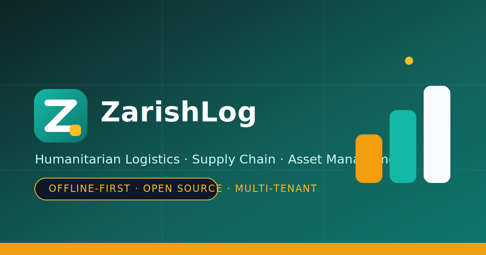

Offline-first PWA
Receive, issue, transfer, and adjust stock with zero connectivity. A Workbox service worker and IndexedDB queue every write and sync it when the network returns.
Humanitarian logistics, made calm.
Offline-first, multi-tenant supply chain and asset management for relief operations on the ground. Go + PostgreSQL backend, Next.js PWA frontend, and a no-code workspace that lets administrators steer the entire configuration visually.

A humanitarian logistics and asset management platform built for teams that work without reliable connectivity and must stay accountable to donors, regulators, and the people they serve.
Receive, issue, transfer, and adjust stock with zero connectivity. A Workbox service worker and IndexedDB queue every write and sync it when the network returns.
Every table carries an org_id and PostgreSQL Row-Level Security enforces isolation at the database layer — enforced, not bolted on.
Master catalogues, form templates, roles, and reference data live as readable JSON, CSV, and
Markdown — version-controlled like code, loaded by make db-seed.
FEFO picking, AMC and reorder calculations, and validation live in a shared Go module shared by the web app, mobile app, and API.
An append-only stock-movement ledger plus a retry-capped sync queue keeps every record truthful in both directions.
Every component — Postgres, Redis, MinIO, Keycloak, Meilisearch — has a genuinely free self-hosted path.
The Config Studio turns everything under config/ and
docs/ into interactive diagrams. Non-technical builders and administrators can browse
forms, master data, roles, business logic flows, and infrastructure dependencies — then edit and
save changes straight back to the files.